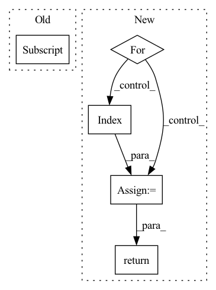

Pattern ID :1416
Before Change
def forward(self, codes: torch.ByteTensor, shape: torch.IntTensor) -> torch.Tensor:
h, w = shape[0], shape[1]
return ((self._decoder(self._quantizer(codes)))[..., :h, :w] .tanh() + 1) / 2
After Change
def forward(self, codes: torch.ByteTensor) -> torch.Tensor:
smallQ = self._reverses[-1](self._quantizers[-1](codes[-1]))
for i in range(self._levels - 1, -1, -1):
q = self._scatters[i](self._quantizers[i](codes[i]))
smallQ = self._reverses[i]( q + smallQ)
return self._decoder(smallQ).tanh()
In pattern: SUPERPATTERN
Frequency: 3
Non-data size: 5
Instances Fragment ID: 4848129
Project Name: xiaosu-zhu/mcquic
Commit Name: 3ca26f40dc8d00ed5fbebee4a77654f9d1d51939
Time: 2021-10-08
Author: xiaosu.zhu@outlook.com
File Name: src/mcqc/evaluation/refModel.py
M Class Name: RefDecoder
N Class Name: RefDecoder
M Method Name: forward(2)
N Method Name: forward(3)
M Parent Class: nn.Module
N Parent Class: nn.Module
M File Name: src/mcqc/evaluation/refModel.py
N File Name: src/mcqc/evaluation/refModel.py
M Start Line: 135
M End Line: 137
N Start Line: 181
N End Line: 185
Before Change
inters.append(conv(out)) // P6td = conv(P6in + resize(P7td))
// bottom-up
inters = inters[::-1] // feature maps from bottom to top, same order as input x
outputs = [inters[0]]
for i, conv in enumerate(self.output_convs):
out = F.interpolate(outputs[-1], scale_factor=0.5, mode="nearest") // resize(P3td)After Change
// top-down
tds = [None] * self.num_levels
tds[-1] = x[-1]
for i in range(self.num_levels - 2, -1 , -1):
tds[i] = self.td_fuses[i]( [x[i], self.upsample(tds[i+1])]) // P6td = conv(P6in + resize(P7td))
// bottom-up
outs = [None] * self.num_levels
outs[0] = tds[0]
for i in range(self.num_levels - 2):
outs[i+1] = self.out_fuses[i]([x[i+1], tds[i+1], self.downsample(tds[i])]) // P4in + P4td + resize(P3td)
outs[-1] = self.out_fuses[-1]([x[-1], self.downsample(tds[-2])]) // P7in + resize(P6td)
return outs
class WeightedFeatureFusion(nn.Module): Fragment ID: 4848126
Project Name: gau-nernst/vision-toolbox
Commit Name: 0844b6bcb142e63b09cf6ae44e5087c20d52c380
Time: 2022-04-10
Author: gau.nernst@yahoo.com.sg
File Name: vision_toolbox/necks.py
M Class Name: BiFPNLayer
N Class Name: BiFPNLayer
M Method Name: forward(2)
N Method Name: forward(2)
M Parent Class: nn.Module
N Parent Class: nn.Module
M File Name: vision_toolbox/necks.py
N File Name: vision_toolbox/necks.py
M Start Line: 163
M End Line: 180
N Start Line: 160
N End Line: 172
Before Change
padding_mask: Optional[torch.Tensor] = None,
) -> torch.Tensor:
seq_len = x.shape[1] // Batch first = True
x = self.embedding(x) // (batch_size, target_seq_len, d_model)
x *= math.sqrt(self.d_model)After Change
pos_enc_tgt = self.positional_encoding(tgt)
output = pos_enc_tgt
for i in range(self.num_layers):
normed_output = self.layer_norm(output)
output = output + self.dropout(
self.attention[i](normed_output, normed_output, normed_output, target_mask)
)
normed_output = self.layer_norm(output)
output = output + self.dropout(
self.source_attention[i]( normed_output, memory, memory, source_mask)
)
normed_output = self.layer_norm(output)
output = output + self.dropout(self.position_feed_forward[i](normed_output))
return self.layer_norm(output)
Fragment ID: 4848128
Project Name: mindee/doctr
Commit Name: fddceba7bee5098b4219b7ba6a0bdf4f4a98adfe
Time: 2022-06-09
Author: felixdittrich92@gmail.com
File Name: doctr/models/recognition/transformer/pytorch.py
M Class Name: Decoder
N Class Name: Decoder
M Method Name: forward(5)
N Method Name: forward(5)
M Parent Class: nn.Module
N Parent Class: nn.Module
M File Name: doctr/models/recognition/transformer/pytorch.py
N File Name: doctr/models/recognition/transformer/pytorch.py
M Start Line: 74
M End Line: 91
N Start Line: 147
N End Line: 167
Before Change
def forward(self, codes: torch.ByteTensor, shape: torch.IntTensor) -> torch.Tensor:
h, w = shape[0], shape[1]
return ((self._decoder(self._quantizer(codes)))[..., :h, :w] .tanh() + 1) / 2
After Change
def forward(self, codes: torch.ByteTensor) -> torch.Tensor:
smallQ = self._reverses[-1](self._quantizers[-1](codes[-1]))
for i in range(self._levels - 1, -1, -1):
q = self._scatters[i](self._quantizers[i]( codes[i]) )
smallQ = self._reverses[i](q + smallQ)
return self._decoder(smallQ).tanh()
Fragment ID: 4848131
Project Name: xiaosu-zhu/mcquic
Commit Name: 3ca26f40dc8d00ed5fbebee4a77654f9d1d51939
Time: 2021-10-08
Author: xiaosu.zhu@outlook.com
File Name: src/mcqc/evaluation/refModel.py
M Class Name: RefDecoder
N Class Name: RefDecoder
M Method Name: forward(2)
N Method Name: forward(3)
M Parent Class: nn.Module
N Parent Class: nn.Module
M File Name: src/mcqc/evaluation/refModel.py
N File Name: src/mcqc/evaluation/refModel.py
M Start Line: 135
M End Line: 137
N Start Line: 181
N End Line: 185